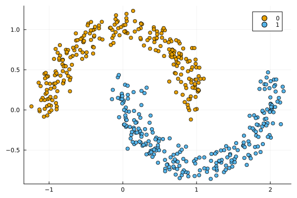
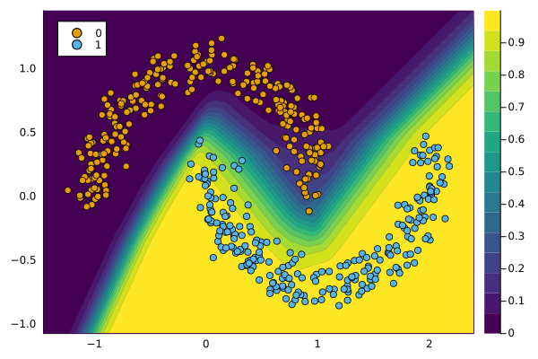

Handling Models
The typical use-case for Counterfactual Explanations and Algorithmic Recourse is as follows: users have trained some supervised model that is not inherently interpretable and are looking for a way to explain it. In this tutorial, we will see how pre-trained models can be used with this package.
Models trained in Flux.jl
We will train a simple binary classifier in Flux.jl on the popular Moons dataset:
n = 500
counterfactual_data = load_moons(n)
X = counterfactual_data.X
y = counterfactual_data.y
plt = plot()
scatter!(counterfactual_data)
The following code chunk sets up a Deep Neural Network for the task at hand:
data = Flux.DataLoader((X,y),batchsize=1)
input_dim = size(X,1)
n_hidden = 32
activation = relu
output_dim = 1
nn = Chain(
Dense(input_dim, n_hidden, activation),
Dropout(0.1),
Dense(n_hidden, output_dim)
)
loss(yhat, y) = Flux.Losses.logitbinarycrossentropy(nn(yhat), y)Next, we fit the network to the data:
using Flux.Optimise: update!, Adam
opt = Adam()
epochs = 100
avg_loss(data) = mean(map(d -> loss(d[1],d[2]), data))
show_every = epochs/5
# Training:
for epoch = 1:epochs
for d in data
gs = gradient(Flux.params(nn)) do
l = loss(d...)
end
update!(opt, Flux.params(nn), gs)
end
if epoch % show_every == 0
println("Epoch " * string(epoch))
@show avg_loss(data)
end
endEpoch 20
avg_loss(data) = 0.08082846806183959
Epoch 40
avg_loss(data) = 0.025974960258047564
Epoch 60
avg_loss(data) = 0.009338310996106358
Epoch 80
avg_loss(data) = 0.006386922069933257
Epoch 100
avg_loss(data) = 0.004799384258580388To prepare the fitted model for use with our package, we need to wrap it inside a container. For plain-vanilla models trained in Flux.jl, the corresponding constructor is called FluxModel. There is also a separate constructor called FluxEnsemble, which applies to Deep Ensembles. Deep Ensembles are a popular approach to approximate Bayesian Deep Learning and have been shown to generate good predictive uncertainty estimates (Lakshminarayanan, Pritzel, and Blundell 2016).
The appropriate API call to wrap our simple network in a container follows below:
M = FluxModel(nn)FluxModel(Chain(Dense(2 => 32, relu), Dropout(0.1), Dense(32 => 1)), :classification_binary)The likelihood function of the output variable is automatically inferred from the data. The generic plot() method can be called on the model and data to visualise the results:
plot(M, counterfactual_data)
Our model M is now ready for use with the package.
References
Lakshminarayanan, Balaji, Alexander Pritzel, and Charles Blundell. 2016. “Simple and Scalable Predictive Uncertainty Estimation Using Deep Ensembles.” https://arxiv.org/abs/1612.01474.